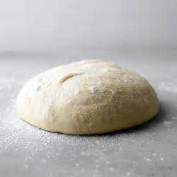

Pizza Dough

Description
Great tasting pizza dough for a medium crust. Not too thick and bread-like but not paper thin either.
Ingredients
- 3 cups all-purpose flour
- 1 (.25 ounce) package active dry yeast
- 2 tablespoons vegetable oil
- 1 teaspoon salt
- 1 tablespoon white sugar
- 1 cup warm water (110 degrees F/45 degrees C)
- Extra oil for greasing bowl
- Extra flour for rolling dough
Steps
- In a large bowl, combine flour and salt
- Place warm water into a separate large mixing bowl
- Add yeast and sugar to water and stir gently until yeast starts to expand
- Add oil to water and yeast mixture
- Gradually mix flour and salt into the water mixture
- Form dough into a ball and powder with flour
- Coat large bowl very lightly with olive oil
- Place dough into oiled bowl and cover with a clean lint-free towel
- Allow dough to rise for 1-2 hours in a warm area
- If the room is chilly, put dough in an un-heated oven, covered
- Put hot water into a pot, cover and place in oven beside bowl of dough
- Roll out dough, cover with pizza sauce, Mozzarella cheese and preferred toppings.